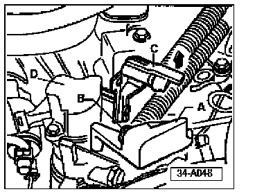
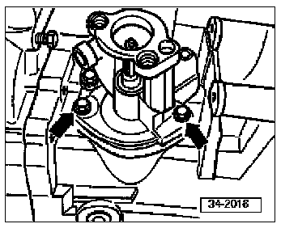
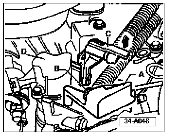
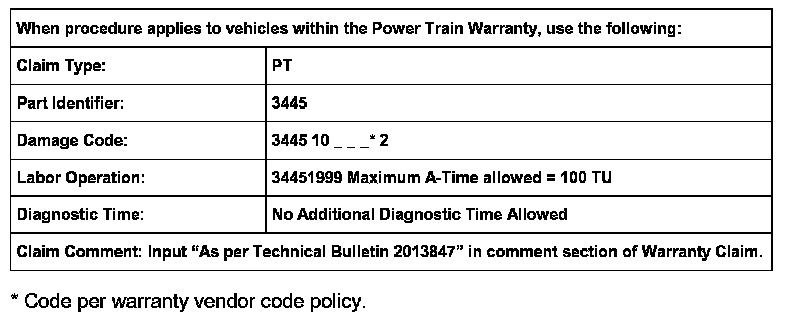
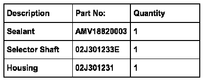

M/T - Shifter Vibration/Knocking in Gear (Canada)
ConditionShifter Lever, Vibrating/Knocking
Shifter lever vibrating/knocking in 1st, 2nd, 3rd or 4th gears.

34 07 03 Jan. 23, 2007, 2013847, Supersedes Technical Bulletin Group 34 number 99-01 dated March 22, 1999 due to inclusion into ElsaWeb.
Technical Background
May be caused by transmission vibrations traveling through the selector shaft and shifter cables to the shifter lever.
Production Solution
Not Applicable.
Service
For vehicles with this condition perform the following:
NOTE: Transmission must remain in neutral throughout procedure.

- Remove electrical connector from back-up light switch housing.
- Remove nut -B- and balance weight -A- from gear selector cable attachment.
- Remove gear selector cable from gear selector lever.
- Disconnect gate selector cable from actuating arm/ relay lever -C- by lifting lug in direction of -arrow-.
- Remove 2 bolts securing back-up light switch housing -D- and remove housing.

- Remove self locking nut -7- and back--up light switch cam sleeve -6-.
- Remove gear shift lever -12-.

- Remove selector shaft housing attachment bolts -arrows- (tap housing lightly with brass or plastic mallet to loosen).
- Remove selector shaft with housing from transmission.
- Enlarge both selector shaft housing attachment holes to 3/8 in. (approx. 9.5mm).
- Reinstall selector shaft with housing using sealant AMV18820003 or equivalent, then adjust according to one of the following conditions.
Vibration/knocking from 1st or 3rd gear:
- Turn housing right (clockwise as far as possible).
Torque bolts to 25 Nm. (18 ft. lb.).
Vibration/knocking from 2nd or 4th gear:
- Turn housing left (counter clockwise as far as possible).
Torque bolts to 25 Nm. (18 ft lb).
- Reinstall gear shift lever.
- Reinstall back-up light switch cam sleeve (always use a new self locking nut).
Torque nut to 25 Nm (18 ft. lb.).

- Lift lug -C- in direction of -arrow-and reinstall gate selector cable to actuating arm/ relay lever.
- Reconnect gear selector cable to gear selector lever (position cable pivot in center of slot on selector lever).
- Reinstall balance weight -A-.
- Reinstall back-up light switch housing -D-.
- Reinstall back-up light switch electrical connector.
- Road test vehicle.
If Vibration/knocking is still present:
- Replace selector shaft with Part No: 02J301233E and also replace housing with Part No: 02J301231 (see note below).
NOTE: Part No. 02J301233E doesn't show up in ETKA, under these MY, use this part for these Models.
NOTE: Enlarge holes on new selector shaft housing before installation.
- If minor vibration/knocking is still present, adjust selector shaft housing (see previous steps).

Warranty
Required Parts and Tools

Tip:
Part number(s) are for reference only. Always see ETKA for the latest part(s) information.